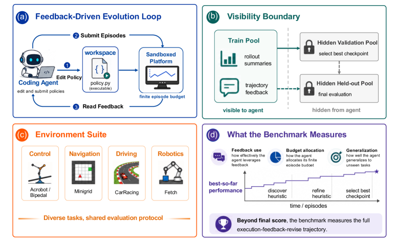
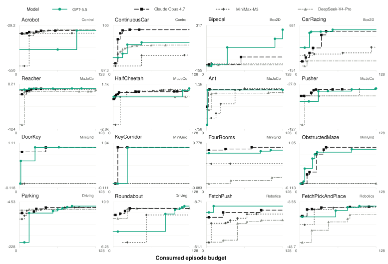
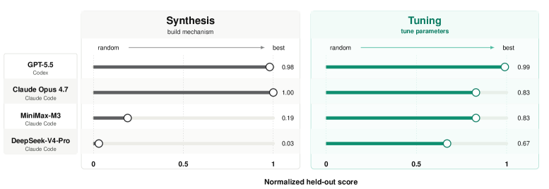
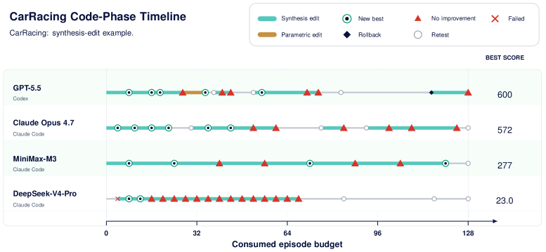
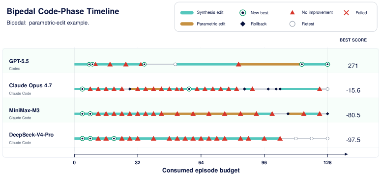
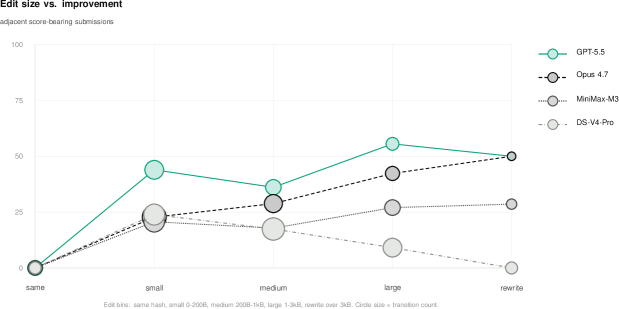
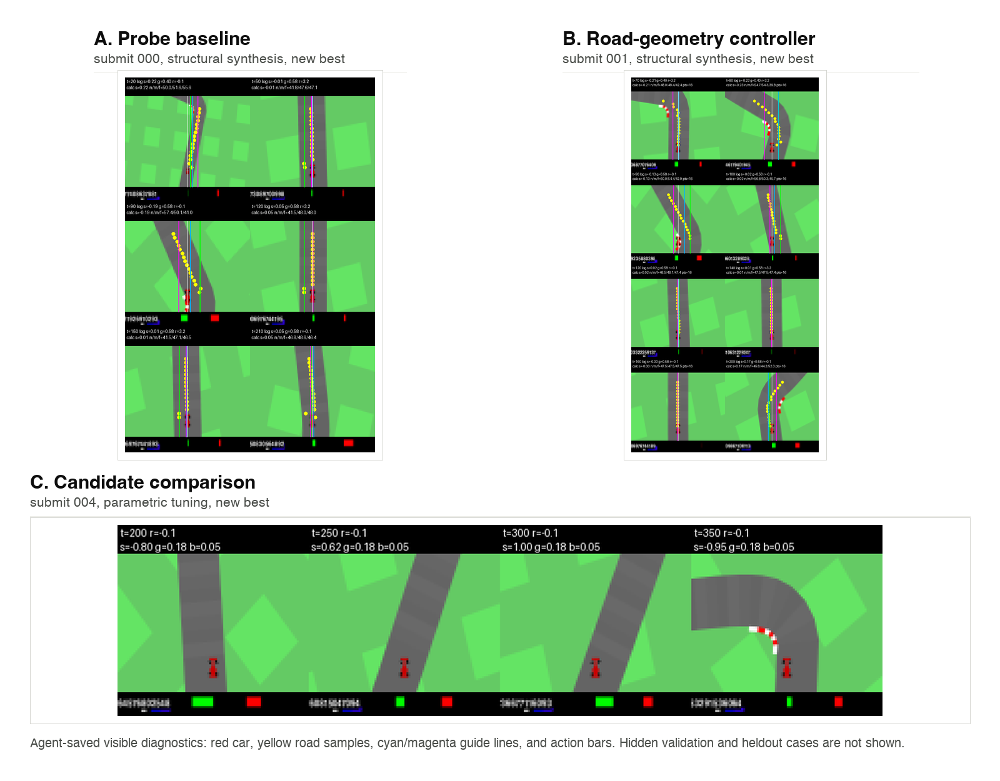
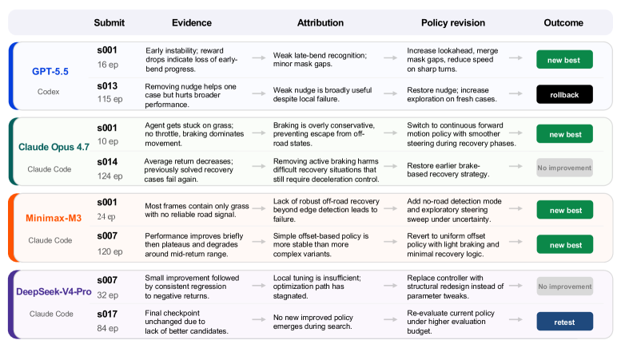

“에이전트가 코드를 수정하며 스스로 학습한다 — 누가 제일 잘하나?”
AI 코딩 에이전트가 단발성 코드 생성을 넘어, 환경 피드백을 받아서 자신이 작성한 정책 코드를 반복적으로 개선하는 능력을 평가하는 벤치마크가 등장했다. EvoPolicyGym — USTC, CUHK, Macau, Tsinghua, Zhejiang, SJTU 등 다수 기관의 연구진이 만든 이 벤치마크는, GPT-5.5, Claude Opus 4.7, MiniMax-M3, DeepSeek-V4-Pro 네 모델을 16개 RL 환경에서 정면 대결시켰다.
결론부터 말하자면: GPT-5.5가 압도적 1위다. 하지만 점수만 보면 놓치는 것이 있다. 이 글에서는 리더보드 순위부터 트랙토리 분석까지, 논문의 핵심을 스토리라인으로 따라간다.
문제: “점수는 같은데, 과정이 전혀 다르다”
기존 에이전트 벤치마크는 크게 두 부류로 나뉜다:
- SWE-bench류 — GitHub 이슈를 해결하는 패치를 한 번 만들면 pass/fail. 과정은 무시된다.
- Open-ended 엔지니어링 — 코드를 계속 고치라고 주지만, 평가 기준이 불투명하고 데이터 누수가 있다.
둘 다 “에이전트가 피드백을 받아서 **실행 가능한 정책(policy)**을 점진적으로 개선하는 능력”을 분리해서 측정하지 못한다. 무작정 재시도하는 에이전트와, 피드백을 정확히 해석해서 구조를 개선하는 에이전트가 같은 점수를 받을 수 있다.
EvoPolicyGym은 이 문제를 Autonomous Policy Evolution이라는 평가 패러다임으로 해결한다.
EvoPolicyGym의 구조: 온라인 저지 + RL 환경

핵심 구조는 에이전트 → 워크스페이스 → 서버 3자 루프다:
- 에이전트가
system/디렉토리의 정책 코드를 수정한다 - 서버가 수정된 코드를 샌드박스에서 실제 RL 환경(Gymnasium, MuJoCo, MiniGrid 등)으로 롤아웃한다
- 피드백(summary, 트랙토리, 비디오, 에러 로그)이 에이전트에게 돌아간다
- 에이전트는 피드백을 보고 다시 코드를 수정한다 — 128 에피소드 예산이 다할 때까지

여기서 중요한 것은 **가시성 경계(Visibility Boundary)**다:
- 볼 수 있는 것: task 설명, 훈련 피드백, 남은 예산
- 볼 수 없는 것: validation 케이스, held-out 케이스, 최종 점수
에이전트는 로컬에서 환경을 직접 실행할 수 없다. 반드시 서버를 통해서만 롤아웃해야 하고, 그것이 예산을 소모한다. 데이터 누수를 원천 차단한 것이다.
Core16: 16개 환경, 4개 카테고리
벤치마크는 표준 RL 환경들을 4개 카테고리로 묶었다:
- Gym/Box2D: Acrobot, CartPole, Continuous CartPole, BipedalWalker, CarRacing
- MuJoCo: HalfCheetah, Reacher 등
- MiniGrid: DoorKey, KeyCorridor, ObstructedMaze, FourRooms
- Robotics/Driving: FetchPush, FetchPickAndPlace, Pusher, Parking, Roundabout
모든 환경이 동일한 인터페이스를 공유한다. 에이전트는 reset()과 act(obs)를 구현하는 Python 객체를 작성하면 된다. 그 안에 규칙, 탐색, 계획, 학습된 파라미터 — 무엇이든 들어갈 수 있다.
리더보드: GPT-5.5의 압도적 커버리지

4개 모델을 동일한 128 에피소드 예산으로 평가했다. 결과는 rank-normalized held-out return으로 정리된다:
| 모델 | Harness | Gym/Box2D | MuJoCo | MiniGrid | Robotics/Driving | Core16 평균 | 1위 | Top-2 |
|---|---|---|---|---|---|---|---|---|
| GPT-5.5 | Codex | 0.938 | 0.875 | 0.812 | 0.938 | 0.891 | 9 | 16/16 |
| Claude Opus 4.7 | Claude Code | 0.812 | 0.750 | 0.938 | 0.500 | 0.750 | 5 | 12/16 |
| MiniMax-M3 | Claude Code | 0.375 | 0.625 | 0.500 | 0.625 | 0.531 | 1 | 3/16 |
| DeepSeek-V4-Pro | Claude Code | 0.375 | 0.250 | 0.438 | 0.375 | 0.359 | 1 | 1/16 |
GPT-5.5는 16개 환경 전체에서 Top-2를 기록한 유일한 모델이다. 9개 환경에서 1위, 나머지 7개에서 2위. 종합 점수 0.891은 2위 Claude(0.750)와 확실한 차이를 보인다.
Claude Opus 4.7은 MiniGrid에서 GPT-5.5를 제치고 1위(0.938 vs 0.812). 잠긴 문을 열고 미로를 탐색하는 구조적 추론 태스크에 강하다. 하지만 Robotics/Driving에서 0.500으로 급락한다.
MiniMax-M3와 DeepSeek-V4-Pro는 각각 1개 환경에서만 1위를 차지하는 데 그쳤다.
핵심 통찰: 리더보드가 보상하는 것은 일관된 준우승자다. 한두 개 환경에서 이기는 것보다, 16개 전체에서 골고루 잘하는 것이 더 어렵고 더 가치있다.
핵심 발견: “구조를 만들 수 있느냐”가 에이전트를 가른다

논문의 백미는 환경을 두 가지 수요로 분류한 것이다:
구조적 합성이 필요한 태스크 (Synthesis-dominant)
MiniGrid 잠긴 문 시리즈(DoorKey, KeyCorridor, ObstructedMaze), CarRacing 등. 정책의 뼈대 자체를 새로 설계해야 한다. 픽셀에서 도로를 인식하고, 실패를 감지하고, 복구 행동을 코딩하는 수준이다.
결과가 충격적이다:
- GPT-5.5: 0.98 / Claude: 1.00 / MiniMax: 0.19 / DeepSeek: 0.03
구조를 못 만드는 에이전트는 무작위 정책과 다를 바 없다. 여기서 1티어와 2티어가 결정적으로 갈린다.
파라미터 튜닝으로 되는 태스크 (Tuning-dominant)
BipedalWalker, HalfCheetah, FetchPush, Parking 등. 기본 골조는 있고 하이퍼파라미터를 미세조정하면 된다.
- GPT-5.5: 0.99 / Claude: 0.67–0.99 / MiniMax: 0.83 / DeepSeek: 0.32–0.98
여기서는 모델 간 격차가 훨씬 좁다. 튜닝은 할 수 있지만, 구조를 짜는 건 다른 이야기다.
CarRacing 트랙 분석: 피드백을 어떻게 읽느냐

CarRacing은 픽셀 입력이라 가장 어려운 합성 태스크다. 에이전트가 인지 시스템(도로 인식)과 컨트롤 시스템(조향/가속)을 모두 코딩해야 한다.

- GPT-5.5: 초반에 핵심 구조를 합성 → 짧은 파라미터 튜닝 → 다시 구조 개선. 롤아웃 관찰 프레임을 진단 증거로 활용해서 다음 수정을 결정한다
- Claude Opus 4.7: 처음부터 끝까지 구조적 합성 단계에 머물며 지속적으로 메커니즘을 교체
- 약한 모델들: 메커니즘을 교체하고 재테스트는 하지만, 잘못된 추상에서 빠져나오지 못한다 → 같은 실수를 반복한다
성공하는 에이전트의 차이는 단순히 “더 많이 수정한다”가 아니다. 피드백에서 무엇을 원인으로 귀인하느냐 — 인지 문제로 볼 것인가, 컨트롤 문제로 볼 것인가 — 가 실력을 가른다.

BipedalWalker: 의외의 결과

BipedalWalker는 튜닝 태스크라 점수 격차가 좁힐 것 같았지만, 의외의 결과가 나온다:
- GPT-5.5: 1.00 (완벽)
- Claude Opus 4.7: 0.24 ← 크게 실패
- MiniMax-M3: 0.06
- DeepSeek-V4-Pro: 0.01
Claude가 구조적 합성에는 강하지만, 파라미터 미세조정이 필요한 연속제어에서는 오히려 약할 수 있다는 흥미로운 포인트다. 두 능력이 서로 독립적이라는 증거다.
한계: Harness 문제와 초기 단계
공정하게, 이 논문의 한계도 짚어야 한다.
1. Harness 혼재: GPT-5.5는 Codex harness를, 나머지 3개는 Claude Code harness를 썼다. “이게 모델 차이인지 harness 차이인지”를 완전히 분리하기 어렵다. 다만 Claude Code harness를 쓴 Claude Opus 4.7이 MiniGrid 1위인 걸 보면, harness만의 문제는 아닌 것으로 보인다.
2. 4개 모델만 평가: “preliminary experiments”라고 명시되어 있다. 더 많은 모델과 환경이 추가될 예정이다.
3. 고전적 RL 환경: Gymnasium, MuJoCo, MiniGrid는 잘 정의되어 있지만, 복잡한 실세계 태스크와의 갭은 여전히 존재한다.
이 벤치마크가 새로운 이유
기존 평가 방법론과의 비교:
- SWE-bench: 단발성 패치 → pass/fail. 과정 무시. EvoPolicyGym은 128회의 롤아웃 과정을 기록한다
- AlphaEvolve / FunSearch: 알고리즘 자체 개선은 평가하지만, 통제된 비교가 어렵다. EvoPolicyGym은 엄격한 가시성 경계로 데이터 누수를 차단한다
- Frontier-Eng: 엔지니어링 설계 최적화는 평가하지만, 정책 진화에 집중하지 않는다. EvoPolicyGym은 정책 진화 자체를 평가 대상으로 삼는다
EvoPolicyGym의 진정한 기여는 리더보드가 아니라 진단 도구라는 점이다. 점수가 같아도 도달 과정이 다른 에이전트를 구분할 수 있게 해준다.
결론: 정책 진화 능력은 “구조적 합성”에서 결정난다
한 문장으로 요약하자:
GPT-5.5가 현재 정책 자율 진화 능력이 가장 뛰어나다. 특히 구조를 새로 만들어야 하는 태스크에서 압도적이다. Claude Opus 4.7은 특정 영역(내비게이션)에서 GPT를 능가하지만 전체 커버리지가 부족하다. 그리고 점수만 보지 말아야 한다 — 128 에피소드 예산 안에서 피드백을 어떻게 해석하고 코드를 바꿨는지, 그 과정을 봐야 한다.
이 벤치마크가 시사하는 바는 명확하다. 코딩 에이전트의 진짜 능력은 “정답 코드를 한 번에 짜는 것”이 아니라, 실패를 진단하고 구조를 재설계하는 것에 있다. 그리고 그 능력은 현재 GPT-5.5가 가장 잘 갖추고 있다.
논문: EvoPolicyGym: Evaluating Autonomous Policy Evolution in Interactive Environments 코드: GitHub 프로젝트 페이지: linzwcs.github.io/EvoPolicyGym 실험 데이터: HuggingFace